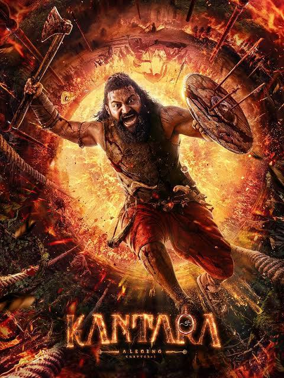
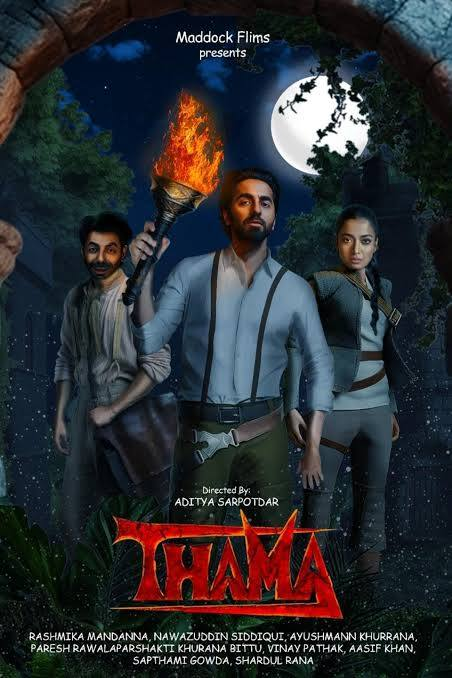

Baahubali – The Epic is a grand Indian film series directed by S. S. Rajamouli, consisting of two parts — Baahubali: The Beginning (2015) and Baahubali: The Conclusion (2017). The story is set in the mythical kingdom of Mahishmati and revolves around two brothers Amarendra Baahubali and Bhallaladeva, who fight for the throne. The film follows Shivudu, a young man raised in a small village, who later discovers that he is the son of the noble Amarendra Baahubali and Devasena.

Kantara Chapter 1
Kantara: Chapter 1 is a 2025 Indian Kannada-language mythological action film written and directed by Rishab Shetty, serving as a prequel to the 2022 blockbuster Kantara. the movie delves deep into the origins of the spiritual and cultural traditions introduced in the first part. Set in pre-colonial coastal Karnataka, during the reign of the Kadamba dynasty, the story explores the mystical relationship between humans, nature, and divine spirits known as Daivas.

Thama
Thama Hindi supernatural romantic thriller directed by Aditya Sarpotdar and produced by Maddock Films. The film stars Ayushmann Khurrana and Rashmika Mandanna in the lead roles, along With its eerie visuals, intense performances, and mythological undertones, Thama explores the mysterious en love, blood, and immortality, Thama promises to be a unique cinematic experience that expands Maddock Films’ supernatural universe following hits like Stree and Bhediya.